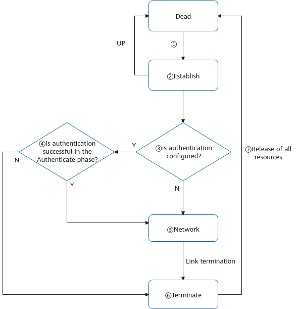
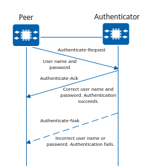
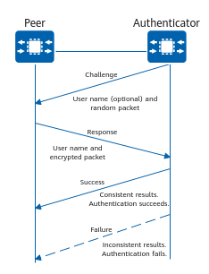

Figure 1 shows the PPP link establishment process.
Figure 1 PPP link establishment process
The PPP link establishment process is as follows:
- Two communicating devices enter the Establish phase from the Dead phase when starting to set up a PPP link.
- In the Establish phase, the two devices perform an LCP negotiation to negotiate the maximum receive unit (MRU), authentication mode, and magic number (used for link status detection).
If the LCP negotiation succeeds, LCP turns Opened, which indicates that a lower-layer link has been established.
- If authentication is configured, the two devices enter the Authenticate phase and perform CHAP or PAP authentication. If no authentication is configured, the two devices enter the Network phase.
- In the Authenticate phase, if authentication fails, the devices enter the Terminate phase. The link is removed and LCP turns Down.
If authentication succeeds, the devices enter the Network phase and LCP remains Opened.
- In the Network phase, the two devices perform an NCP negotiation to select and configure a network protocol and to negotiate network-layer parameters. After the two devices succeed in negotiating a network protocol, packets can be sent over this PPP link using the network protocol.
Various control protocols, such as IP Control Protocol (IPCP) and Multiprotocol Label Switching Control Protocol (MPLSCP), can be used in NCP negotiation.
- After NCP negotiation succeeds, packets can be sent over the PPP link. During the PPP operation, the PPP connection can be terminated at any time. A physical link disconnection, authentication failure, timeout timer expiry, or connection close by administrators through configuration can cause the two devices to enter the Terminate phase.
- In the Terminate phase, the two devices enter the Dead phase after all resources are released. The two devices remain in the Dead phase until they start to establish a new PPP connection.
The following describes each phase in PPP link establishment.
Dead Phase
The physical layer is unavailable during the Dead phase. A PPP link begins and ends with this phase.
When two communicating devices detect that the physical link between them is activated (for example, carrier signals are detected on the physical link), the two devices enter the Establish phase from the Dead phase.
After the link is terminated, the two devices return to the Dead phase.
Establish Phase
In the Establish phase, the two devices perform an LCP negotiation. The LCP status changes as follows:
- When the link is unavailable, LCP is in the Initial or Starting state. When detecting that the link is available, the physical layer sends an up event to the link layer. After receiving the up event, the link layer changes the LCP status to Request-Sent. Then the devices at both ends send Configure-Request packets to configure a data link.
- If the local device first receives a Configure-Ack packet from the peer, the LCP status changes from Request-Sent to Ack-Received. After the local device sends a Configure-Ack packet to the peer, the LCP status changes from Ack-Received to Opened.
- If the local device first sends a Configure-Ack packet to the peer, the LCP status changes from Request-Sent to Ack-Sent. After the local device receives a Configure-Ack packet from the peer, the LCP status changes from Ack-Sent to Opened.
- After LCP enters the Opened state, the two devices enter the next phase.
The next phase is the Authenticate or Network phase, depending on whether authentication is required.
Authenticate Phase
The Authenticate phase is optional. By default, PPP does not perform authentication during PPP link establishment. If authentication is required, an authentication protocol must be specified in the Establish phase.
PPP provides two authentication modes: PAP authentication and CHAP authentication.
Both PAP and CHAP authentication supports unidirectional authentication and bidirectional authentication. In unidirectional authentication, the device on one end functions as the authenticator, and the device on the other end functions as the peer. In bidirectional authentication, each device functions as both the authenticator and peer. In practice, unidirectional authentication is typically used.
PAP Authentication Process
PAP is a two-way handshake authentication protocol that transmits passwords in plain text. Figure 2 shows the authentication process.
Figure 2 PAP authentication process
- The peer sends the local user name and password to the authenticator.
- The authenticator checks whether the received user name is in the local user table.
- If the received user name is in the local user table, the authenticator checks whether the received password is correct. If the password is correct, the authentication succeeds.
- If the password is incorrect, the authentication fails. If the received user name is not in the local user table, the authentication fails.
CHAP Authentication Process
CHAP is a three-way handshake authentication protocol. CHAP transmits only user names but not passwords, so it is more secure than PAP. Figure 3 shows the CHAP authentication process.
Figure 3 CHAP authentication process
- The authenticator initiates an authentication request by sending a Challenge packet, which contains a random number and the local user name, to the peer.
- The peer checks whether a CHAP password is configured on the local interface after receiving the authentication request of the authenticator.
- If a CHAP password is configured, the peer uses the ID field and random number contained in the received Challenge packet as well as the configured password for hash calculation. It then sends an authentication response that contains the generated hash value and its user name to the authenticator.
- If a CHAP password is not configured, the peer searches its local user table for the corresponding password based on the user name in the received Challenge packet, uses the ID field and random number contained in the packet and the searched password for hash calculation. Thereafter, it sends an authentication response that contains the generated hash value and its user name to the authenticator.
- The authenticator uses the ID field, locally saved password of the peer, and the random number in the Challenge packet for hash calculation. The authenticator then compares the generated hash value with that in the received authentication response packet. If they are the same, the authentication succeeds. If they are different, the authentication fails.
Comparison Between CHAP and PAP Authentication
- In PAP authentication, passwords are sent over links in plain text. After a PPP link is established, the peer repeatedly sends the user name and password until authentication finishes. A high level of security is not ensured for this mode, so it is used on networks that do not require high security.
- CHAP is a three-way handshake authentication protocol. In CHAP authentication, the peer sends only a user name to the authenticator. Compared with PAP, CHAP features higher security because passwords are not transmitted. On networks requiring high security, CHAP authentication is used to establish a PPP connection.
Network Phase
In the Network phase, NCP negotiation is performed to select and configure a network protocol and to negotiate network-layer parameters.
Each NCP may be in Opened or Closed state at any time. After an NCP enters the Opened state, network-layer data can be transmitted over the PPP link.
Terminate Phase
A PPP link can be terminated at any time. A link can be terminated manually by an administrator, or be terminated due to the loss of carrier, an authentication failure, or other causes.